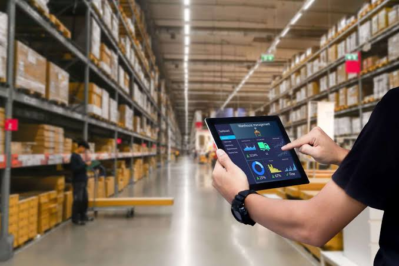
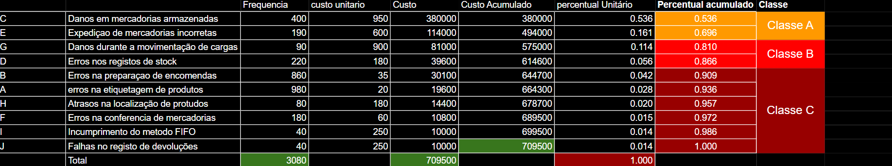

Implementar os Procedimentos da Cadeia de Abastecimento, aborda conhecimentos sobre as diferentes atividades logísticas de uma empresa, desde o aprovisionamento e a aquisição de mercadorias até ao seu armazenamento e distribuição ao cliente final.
Uma boa gestão da cadeia de abastecimento tem uma influência direta no funcionamento de uma organização, tanto a nível operacional como financeiro. A organização dos processos, o controlo das existências e a escolha adequada dos fornecedores são fatores que contribuem para a redução dos custos, o cumprimento dos prazos e a satisfação dos clientes.

Reflexão sobre as aprendizagens adquiridas
Esta UC foi o meu primeiro contacto com esta tema de cadeia de abastecimento, aprendi o conceito de cadeia de abastecimento e identifiquei os diferentes intervenientes que fazem parte da mesma. Compreendi a diferença entre as atividades a montante e a jusante da empresa, percebendo a relação que existe entre fornecedores, empresas, distribuidores e consumidores finais.
Relativamente ao aprovisionamento, percebi a importância de planear as necessidades de compra e de selecionar os fornecedores de acordo com as necessidades da empresa. Através dos exercícios de avaliação de fornecedores, compreendi que o preço nem sempre deve ser o principal fator de decisão, sendo igualmente importante considerar a qualidade dos produtos, os prazos de entrega e a fiabilidade do fornecedor. A utilização de matrizes de avaliação e de pontuações ponderadas ajudou-me a perceber como estas decisões podem ser tomadas de forma mais objetiva e fundamentada.
Na gestão de stocks, adquiri conhecimentos sobre o stock mínimo, o stock máximo, o stock de segurança e o ponto de encomenda. Antes de abordar estes conteúdos, não tinha uma noção tão clara da importância de manter um equilíbrio entre as quantidades disponíveis em armazém e as necessidades da empresa. Tanto a falta como o excesso de mercadorias podem trazer consequências negativas, seja pela perda de vendas ou pelo aumento dos custos de armazenamento.
Um dos conteúdos que considerei mais interessantes foi o Teorema de Pareto, conhecido pela regra 80/20, e a sua aplicação através da análise ABC. Com os exercícios realizados, percebi que nem todos os artigos de um inventário apresentam a mesma importância para uma empresa. A classificação dos produtos nas categorias A, B e C permite identificar aqueles que representam uma maior parte do valor do inventário e que, por esse motivo, necessitam de um controlo mais rigoroso. Esta aprendizagem ajudou-me a compreender como uma empresa pode estabelecer prioridades na gestão das suas existências.

Também foram abordados os procedimentos de organização do armazém e do economato, nomeadamente a receção, conferência, armazenamento, movimentação e expedição de mercadorias. Percebi que uma boa organização do espaço facilita a localização dos produtos, reduz o tempo necessário para preparar encomendas e diminui a possibilidade de ocorrerem erros.
Neste contexto, conheci também os principais documentos utilizados nas operações logísticas, como as requisições internas, as ordens de compra, as guias de transporte, os registos de receção e as fichas de inventário. Compreendi que estes documentos são fundamentais para acompanhar os movimentos das mercadorias e garantir que as operações são devidamente registadas.
Dos conteúdos abordados nesta unidade curricular, os métodos de valorização de existências FIFO e CMP foram dos que considerei mais relevantes para a área da contabilidade.
O método FIFO (First In, First Out) baseia-se no princípio de que os primeiros artigos a entrar são os primeiros a sair, para efeitos de valorização. Já o método CMP (Custo Médio Ponderado) permite determinar um custo médio dos artigos, tendo em consideração as quantidades e os respetivos custos de aquisição.
Através dos exercícios práticos, consegui perceber que a utilização de diferentes métodos de valorização pode originar valores distintos para as saídas de mercadorias e para as existências finais. Esta diferença é particularmente importante na contabilidade, uma vez que a valorização dos inventários pode influenciar o apuramento dos custos e dos resultados da empresa.
Outro aspeto importante foi a reconciliação de stocks. Aprendi que as quantidades registadas no sistema informático nem sempre correspondem às existências físicas em armazém. Estas diferenças podem resultar de erros de registo, perdas ou movimentos de mercadorias que ainda não foram registados. Assim, compreendi a necessidade de realizar contagens físicas e verificar os movimentos pendentes, garantindo uma maior fiabilidade da informação.
O estudo do Lote Económico de Encomenda (LEE) permitiu-me compreender como uma empresa pode determinar a quantidade mais adequada a adquirir em cada encomenda, procurando minimizar os custos associados à gestão de stocks. Através dos exercícios, aprendi a relacionar a quantidade encomendada, o número de encomendas anuais, o stock médio e os custos de passagem e de posse. Percebi que encomendar grandes quantidades nem sempre representa uma vantagem económica, pois pode aumentar os custos de armazenamento.
Relativamente à utilização de ferramentas digitais, compreendi a importância dos códigos de barras, da rastreabilidade dos produtos e dos sistemas informáticos de gestão. Aprendi a distinguir os sistemas ERP, que permitem integrar diferentes áreas de uma empresa, dos sistemas WMS, que estão mais direcionados para a gestão das operações de armazém. A utilização destas ferramentas facilita o acompanhamento das mercadorias e o acesso à informação necessária para a tomada de decisões.
Foram igualmente abordadas as vantagens da utilização de procedimentos, formulários e checklists. Percebi que a padronização das tarefas permite que os colaboradores sigam os mesmos procedimentos, reduzindo a ocorrência de erros e facilitando o controlo das operações.
No que diz respeito à avaliação do desempenho das atividades logísticas, aprendi a importância dos indicadores-chave de desempenho, também conhecidos como KPI. Estes indicadores permitem acompanhar os resultados das operações e perceber se os objetivos definidos pela empresa estão a ser cumpridos.
Um dos indicadores estudados foi o OTIF (On Time In Full), que permite avaliar a percentagem de encomendas entregues dentro do prazo e na totalidade. Foram também abordadas as taxas de reclamações e de erros de picking, relacionados com a preparação das encomendas. Através destes conteúdos, percebi que não basta calcular os indicadores, sendo necessário interpretar os resultados, identificar as causas dos desvios e procurar soluções para melhorar o desempenho da empresa.
A Segurança e Saúde no Trabalho foi outro tema abordado durante esta unidade curricular. Aprendi a distinguir o conceito de perigo do conceito de risco e a identificar situações que podem colocar em causa a segurança dos trabalhadores nas atividades de armazenamento e transporte. Compreendi a importância das medidas preventivas e da utilização adequada dos equipamentos de proteção individual, sem esquecer que se deve dar prioridade à eliminação ou redução dos riscos na sua origem.
Quanto à proteção ambiental, percebi que as atividades logísticas também podem ter consequências para o ambiente. A gestão adequada dos resíduos, a prevenção de derrames, a redução de embalagens e o consumo responsável de energia são algumas das medidas que podem contribuir para um funcionamento mais sustentável das empresas.
Por fim, os conteúdos relacionados com a qualidade permitiram-me compreender a importância da identificação e do tratamento de não conformidades. Aprendi a distinguir uma correção imediata de uma ação corretiva, percebendo que resolver um problema no momento não significa necessariamente eliminar a sua causa. É importante analisar o que originou a situação e implementar medidas que evitem a sua repetição, contribuindo assim para a melhoria contínua dos processos.
## Dificuldades e competências desenvolvidas
Ao longo desta unidade curricular, senti algumas dificuldades nos conteúdos que envolviam a Documentos utilizados na logistaca e na Elaboração e utilização de procedimentos, formulários e checklists para uniformizar as operações logísticas, exigiram alguma atenção e prática extra.
Com a resolução dos exercícios e a revisão dos conteúdos abordados nas aulas, fui conseguindo compreender melhor o porquê e o uso dos documentos utilizados e qual a metodologia e ponto de vista na elaboração dos procedimentos para as operações logisticas. Na parte dos exercicios de calculo, organizar corretamente a informação antes do inicio do mesmo facilita bastante a sua resolução e ajudou me a evitar erros.
Conclusão final das aprendizagens
Ao fazer um balanço desta unidade curricular, considero que adquiri conhecimentos importantes para compreender melhor o funcionamento das empresas e a relação entre as atividades logísticas e a contabilidade.
Os conteúdos relacionados com a gestão de stocks, a valorização de existências e o controlo dos custos foram aqueles em que encontrei uma ligação mais direta com o meu percurso formativo. Antes desta unidade curricular, não tinha uma perceção tão abrangente da influência que as decisões de compra, armazenamento e distribuição podem ter nos resultados financeiros de uma empresa.
Apesar dos conhecimentos adquiridos, considero que ainda posso melhorar a minha capacidade de interpretar indicadores de desempenho e ganhar mais autonomia na aplicação dos métodos de cálculo. São competências que pretendo continuar a desenvolver, tanto durante a formação como futuramente em contexto profissional.
De forma geral, esta unidade curricular permitiu-me compreender que uma cadeia de abastecimento bem organizada não depende apenas da movimentação de mercadorias, mas também da qualidade da informação, do planeamento, da comunicação e do controlo dos recursos disponíveis.
Considero que esta unidade curricular contribuiu para desenvolver a minha capacidade de análise, organização, autonomia e resolução de problemas. Ajudou-me também a perceber a importância do rigor no tratamento da informação, especialmente quando os dados obtidos servem de base para decisões financeiras e administrativas.